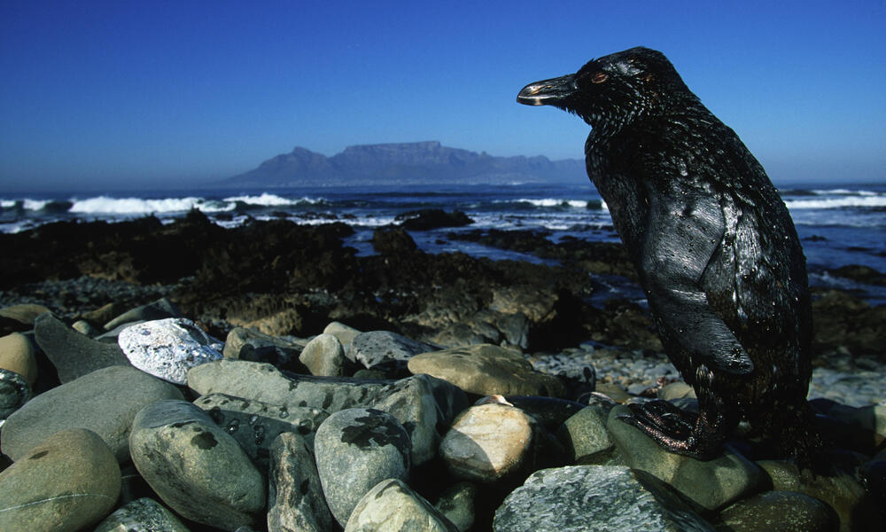
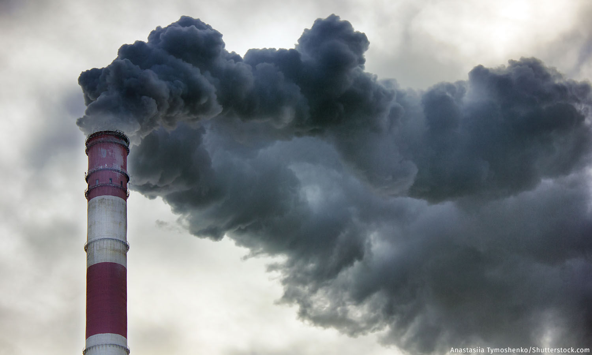

|
Oil and gas operations cause the release of harmful pollutants into the air and the discharge of toxic chemicals into water bodies, “thereby degrading the clean air and water that polar bears, whales, walrus—and humans—depend on for survival.” Oil and gas companies use machines, like an air gun, which create seismic sounds that can be deafening, and life threatening for marine species—whales and other animals use seismic sounds to find food, find mates and navigate in dark waters. “Facilities built by oil companies as support infrastructure” are often built in animals’ habitats and can “interfere with the movement of migratory animals.” Oil spills can also harm marine life by polluting the water with oil. Sea animals that regularly travel through a body of water, would be endangered while swimming through the oil polluted water. Some marine animals, like dolphins and whales might inhale the oil, affecting their lungs, immune function and reproduction. Quotes from World Wildlife Fund |
 Peguin covered in oil from an oil spill off the coast of South Africa Robben Island, South Africa. |
|
The oil industry contains a variety of facilities and equipment which are a significant source of methane emissions. Methane is a potent greenhouse gas, "contributing to 25% to 40% of global warming" and having a global warming potential 20 times more than carbon dioxide. Abandoned gas facilities across the United States also continue to leak methane gases. A study conducted by Stanford researchers recorded the emission of companies when they first explored a potential oil site and when they began transporting crude oil to refineries. Quote from CNN |
 |